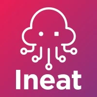
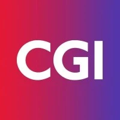

Germain
Bâtisseur de Plateformes et de Nuages
Abstrait
J'ai grandi dans l'univers des systèmes Linux. Ma volonté de progression m'a rapidement amené vers des outils automatisation, d'Infra-as-Code, ainsi que les plateformes de CI/CD.
La découverte de l'univers des conteneurs est digne de 'Rencontre avec le 3ème type'. C'est devenu un écosystème que j'aime tester, utiliser et transmettre.
Mon amour pour le logiciel libre m'a amené à contribuer pour des librairies, sqlfluff, libtado, crossplane-assistant ou encore cvwonder.
J'aime passer du temps sur des 'side projects' qui peuvent aider, servir et simplifier le quotidien des Techs. Ce que nous enseigne la sphère de l'open source est vertueux : l'entraide et le partage.
Réseaux sociaux
Dernières expériences
Zatsit
10 mois, aujourd'hui
Platform Engineer
2024, mars - 2024, décembre, chez Adeo
2024, mars - 2024, décembre
Adeo (Ronchin, France)
Mission : Construire une IDP, plateforme interne de développement, totalement managée pour aider les développeurs à se focaliser sur le code. Sur base du code source, la plateforme provisionne l'infrastructure sous-jacente, les base de données, la construction des artefact et publication sur la registry, le déploiement dans Kubernetes, l'intégration du monitoring avec Datadog et construction des Monitors.
Client : Adeo
Technologies : ArgoCD, Kubernetes, K8s Operrator, Crossplane, Vault, Github Actions, JFrog Artifactory, Backstage, Python, Golang
- Développement de l'operator Kubernetes responsable du provisioning des bases de données
- Développement des Compositions Crossplane pour provisionner les base de données
- Développement de l'API de l'IDP en Golang
- Déploiement avec ArgoCD
- Vulgarisation d'une architecture applicative en langage déclaratif (yaml)
 Ineat
7 ans, 10 mois
Lead Tech Ops
2022, juin - 2024, février, chez Siemens
2022, juin - 2024, février
Siemens (Lille, France)
Mission : Mettre en place l'infrastructure d'un puit de logs et métriques.
Client : Siemens
Technologies : Linux, Apache Zookeeper, Apache Kafka, Kafka Streams, Clickhouse, Prometheus, Prometheus Exporters, AlertManager, Fluentbit, Terraform, Ansible, Gitlab CI, Python, Pytest testinfra
- Création d'un produit déclinable (couches de configuration multiples)
- Création d'un générateur de configuration pour les déclinaisons clients
- Développement d'un système de déploiement offline et asynchrone
- Industrialisation de la plateforme de développement
- Création d'environnements éphémères pour rendre les développeurs autonomes
Lead Tech Ops
2023, juin - 2024, février, chez Kiloutou
2023, juin - 2024, février
Kiloutou (Lille, France)
Mission : Maintenir opérationnellement les infrastructures liées aux applications. Gestion d'une équipe de 3 personnes pour assurer l'infogérance des applications du client. L'une d'entre elle est le site kiloutou.fr.
Client : Kiloutou
Projet : Kite
Technologies : Linux, Terraform, Gitlab CI
- Supervision de la plateforme
- Amélioration continue de la partie Cloud et Infra
- Analyse et mitigation sur la partie sécurité
Formateur Ineat Academy
2018, novembre - 2023, décembre, chez Ineat
2018, novembre - 2023, décembre
Ineat (Lille, France)
Mission : Les formations dispensées sont Linux, Ansible, Docker, Kubernetes, Rancher, Terraform
Client : Ineat
Technologies : Linux, Ansible, Docker, Kubernetes, Rancher, Terraform
- Création des supports de formation
- Animation des formations
- Questionnaire d'évaluation
Cloud Data Ops
2021, mars - 2021, décembre, chez UTB
2021, mars - 2021, décembre
UTB (Lille, France)
Mission : Collecter, ingérer les bons de livraison et les mettre en corrélation avec les données présentes dans l'ERP en vue de détecter les écarts sur les quantités (erreurs fournisseur, erreurs de livraison, perte de produit, etc).
Client : UTB
Technologies : GCP, Google Document AI, Python
- Ingestion de bons de livraison dans Google DocumentAI
- Interprétation des résultats et manipulation des données extraites
- Réorganisation et correction des résultats pour réduire le taux d'erreur
Accompagnement Ops
2021, septembre - 2024, février, chez Ineat Group
2021, septembre - 2024, février
Ineat Group (Lille, France)
Mission : Accompagner les équipes techniques sur le projet.
Client : Ineat Group
Technologies : Azure, Kubernetes, Azure Keyvault, ArgoCD
- Mise en place de la LZ Azure
- Configuration de Azure Secret Store CSI driver pour connecter Kubernetes à Azure Keyvault
Ops Builder
2021, juillet - 2024, août, chez Faber Novel
2021, juillet - 2024, août
Faber Novel (Lille, France)
Mission : Construction et déploiement des plateformes applicatives.
Client : Faber Novel
Technologies : Azure, Kubernetes, Jenkins, Prometheus
- Configuration des Helm Charts applicatifs
- Configuration des pipeline Jenkins
- Configuration de Prometheus dans Kubernetes
Architect Cloud
2021, avril - 2024, juillet, chez Everysens
2021, avril - 2024, juillet
Everysens (Lille, France)
Mission : Architecte Cloud
Client : Everysens
Technologies : GCP, Kubernetes, Nginx, modSecurity, Monitoring, Gitlab CI
- Configuration de Nginx avec le WAF modSecurity dans Kubernetes
- Collecte et création de log-based metrics pour surveiller les logs du WAF
- Déploiement de GCP OS Lifecycle
- Déploiement dans Gitlab CI
Accompagnement technique et organisationnel
2022, février - 2023, mars, chez Martin Belaysoud
2022, février - 2023, mars
Martin Belaysoud (Lille, France)
Mission : Accompagnement des équipes techniques au changement d'organisation, se diriger vers une approche DevOps.
Client : Martin Belaysoud
Technologies : Kubernetes, Jenkins, Ansible, Terraform, Kubernetes
- Audit des équipes techniques et de l'organisation
- Acculturation à l'approche DevOps
- Acculturation sur les technologies d'automatisation
- Formation sur Terraform et Kubernetes
Audit technique
2022, septembre - 2022, septembre, chez Adeo, Leroy Merlin
2022, septembre - 2022, septembre
Adeo, Leroy Merlin (Lille, France)
Mission : Audit des applications liées à la gestion des chantiers et des artisans dans tout l'éco-système Adéo et Leroy Merlin.
Client : Adeo, Leroy Merlin
Technologies : GCP, Kubernetes, Terraform
- Interview de 5 équipes techniques (FR, ES, BR)
- Audit des infrastructures et des projets Cloud
- Présentation et retour suite au rapport d'audit
Accompagnement à la conteneurisation
2019, octobre - 2021, juin, chez CGI Finance
2019, octobre - 2021, juin
CGI Finance (Lille, France)
Mission : Accompagnement à la conteneurisation
Client : CGI Finance
Technologies : VMWare, Kubernetes, Rancher, Helm, Azure DevOps, Open Policy Agent, Hashicorp Vault
- Audit de l'infrastructure
- Acculturation et accompagnement des équipes techniques
- Mise en place de la plateforme de conteneurs
- Mise en place de la chaine de déploiement Dev to Prod
- Implémentation de Gatekeeper (Open Policy Agent)
- Acculturation à Hashicorp Vault
Cloud Architect
2022, janvier - 2022, septembre, chez Trixit
2022, janvier - 2022, septembre
Trixit (Lille, France)
Mission : Déploiement d'une plateforme de paiement en 3x sans frais pour les professionnels.
Client : Trixit
Technologies : GCP, Kubernetes, Terraform, Trivy, Github Actions, Gravitee, Monitoring
- Création des projets Cloud avec Terraform
- Configuration des pipelines sur Github Actions
- Déploiement de Gravitee dans Kubernetes
Audit technique
2021, septembre - 2021, septembre, chez Finorpa
2021, septembre - 2021, septembre
Finorpa (Lille, France)
Mission : Audit des applications d'une société sous le mandat de Finorpa.
Client : Finorpa
Technologies : AWS
- Interview des équipes techniques
- Audit des infrastructures et des projets Cloud
- Présentation et retour suite au rapport d'audit
Ops Builder
2020, juillet - 2021, avril, chez Leroy Merlin
2020, juillet - 2021, avril
Leroy Merlin (Lille, France)
Mission : Ops Builder
Client : Leroy Merlin
Technologies : GCP, Terraform, Kubernetes, Openshift, GKE, Helm, Gitlab CI, Github Actions
- Industrialisation de l'infrastructure de Terraform
- Implémentation de la CI/CD
- Conteneurisation des applications dans K8s
Architect Cloud
2019, septembre - 2020, mars, chez Adeo
2019, septembre - 2020, mars
Adeo (Lille, France)
Mission : Architecte Cloud GCP & DevOps
Client : Adeo
Technologies : GKE, Kubernetes, Helm, Gitlab CI
- Mise en place de la conteneurisation de l'application (micro-services NestJS) de la Dev à la Prod.
- Implémentation de la CI/CD
- SAST et sécurité des applications (code et images Docker)
- Simplification des déploiements sur les environnements
- Création d'environnements de travail éphémères
Architecte Cloud GCP
2019, février - 2029, août, chez Cooptalis (Anywr)
2019, février - 2029, août
Cooptalis (Anywr) (Lille, France)
Mission : Architecte Cloud GCP
Client : Cooptalis (Anywr)
Technologies : GCE, GKE, Kubernetes, Helm, Ansible, Kafka, CircleCI, Elastic Cloud
- Automatisation d'une plateforme GCE et GKE avec Terraform
- Déploiement des applications à la volée avec CircleCI
- Déploiement de Clusters Kafka avec Terraform et Ansible
- Remontées des logs et métriques dans Elastic Cloud
Accompagnement infrastructure
2019, décembre - 2019, mars, chez Galeries Lafayette
2019, décembre - 2019, mars
Galeries Lafayette (Lille, France)
Mission : Architecte Technique en Infrastructure
Client : Galeries Lafayette
Technologies : VMWare, Redis, RabbitMQ
- Accompagnement a la mise en place des briques Redis et RabbitMQ en haute disponibilité
- Accompagnement sur les axes de supervision technique des briques techniques
Architecte Cloud
2017, septembre - 2017, novembre, chez Cofidis
2017, septembre - 2017, novembre
Cofidis (Lille, France)
Mission : Intervention ponctuelle chez le client dans le but de mettre en place une infrastructure sur AWS.
Client : Cofidis
Technologies : Linux, Apache, PHP, AWS (VPC, EC2, RDS, ELB, CloudWatch, IAM), CloudFormation
- Création de la stack avec CloudFormation
- Scalabilité en fonction du trafic et de la charge
- Monitoring système et applicatif
SysOps
2019, décembre - 2019, mars, chez Decathlon
2019, décembre - 2019, mars
Decathlon (Lille, France)
Mission : SysOps
Client : Decathlon
Technologies : Linux, RPM, Apache, Oracle Database, LDAP, Ansible, Rundeck, Splunk, ELK, Docker, Rancher, Jenkins, CDN
- Administration système et socle des plateformes
- Gestion des environnements
- Intégration technique de la solution Oracle Commerce et automatisation complète de son installation
- Mise en place d'un cluster OpenLDAP world-wide en mode Multi-Master.
- Mise en place d'outils et socles : Jenkins, Sonar, Docker, Rancher
- Mise en place d'outils de Monitoring : Splunk, ELK, Grafana
- Gestion du CDN Europe de la plateforme e-commerce
- Automatisation de "tout ce qui est possible d'automatiser" avec Ansible, Rundeck, Jenkins, scripts Python
 CGI
Intégrateur Système et Applicatif
2014, juillet- 2016, avril, chez Auchan
2014, juillet- 2016, avril
Auchan (Lille, France)
Mission : Intégrer les livrables fournis par les Centres de Services, assurer leur qualité, documenter leur installation en vue d'être déployé en production. Rationalisation des installation et homogénéisation des livrables.
Client : Auchan
Technologies : Linux, Apache Zookeeper, Apache Kafka, Kafka Streams, Clickhouse, Prometheus, Prometheus Exporters, AlertManager, Fluentbit, Terraform, Ansible, Gitlab CI, Python, Pytest testinfra
- Intégration des artefacts projet (jar, war, etc)
- Documentation de l'installation
- Rationalisation et homogénéistaion des installations
- Création d'un SAS de validation des livrables en entrées (sanity check)
- Migration des données entre les bases Oracle (11g et 12c)
Technical skills
Cloud
AWSOps
LinuxOthers
GolangOpen Source Projects
Certifications